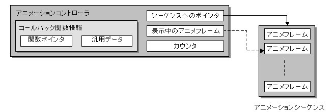

アニメーションコントローラ概要
概念図

説明
アニメーションコントローラは、セルアニメーション及びマルチセルアニメーションの再生を制御します。
アニメーションコントローラの内部データ
表示中のアニメーションフレーム
表示中のアニメーションフレームには、現在再生中のアニメーションシーケンスデータへのポインタが格納されます。
コントローラは、アニメーションシーケンスには、アニメーションを定義する情報が格納されています。
アニメーションシーケンスデータは、メインメモリ上に読み出された アニメーションデータ（.nanr, .nmarファイル）の内部に存在します。
アニメーションデータは、静的なデータであり、書き換えられることは有りません。
カウンタ
カウンタには、現在再生中のアニメーションのフレームデータへのポインタが格納されます。
アニメーションフレームデータは、その期間に表示するセルまたはマルチセルのデータの番号などの情報を指しています。
再生スピード
再生スピードは、アニメーション再生スピードを変更するための情報です。
アニメーションの再生スピードを設定可能です。マイナス値を設定することで、逆再生が設定可能です。
（なお、逆再生設定には逆再生フラグを設定する方法も用意されています。）
コールバック関数情報
アニメーションコントローラはアニメーション再生の種々のタイミングでのコールバック関数呼び出しをサポートします。
そのため、アニメーションコントローラはコールバック関数の関数ポインタとコールバック関数に渡す、4バイトのユーザデータをメンバとして保持しています。
参照
なし
履歴
2004/12/06 初版